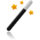

Plantilla:Welcome
 De: La Frikipedia, la enciclopedia extremadamente seria.
De: La Frikipedia, la enciclopedia extremadamente seria.
|
|

|
|
Vienbenido/a seas a la Frikipedia Welcome
|
|
Parece que eres nuevo/a en la Frikipedia, lugar de rojifachas comunistafascistas comeniños. Si quieres que tus creaciones puedan llamarse artículos y formen parte de esta fuente de saber, te recomendamos que primero leas esto:
Presta especial atención a los Consejos Básicos.
|
Si necesitas ayuda para crear tu primer artículo, prueba nuestro asistente que te guiará por el buen camino 
Algunos enlaces de utilidad:
Se admite en La Frikipedia
-
 Escribir artículos satíricos o paródicos acerca de algo o alguien que sea reconocido por lo menos nacionalmente (no olvides colocarle a tus artículos la plantilla {{enobras}}).
Escribir artículos satíricos o paródicos acerca de algo o alguien que sea reconocido por lo menos nacionalmente (no olvides colocarle a tus artículos la plantilla {{enobras}}).
- Leer todas las ayudas para sacarte las dudas que tengas.
- Puedes reclamar por algún artículo que creas molesto o insultante en la discusión del artículo, o bien, dejar un mensaje en la discusión de algún administrador (ten en cuenta que tu reclamo puede no ser escuchado si no expresas tus argumentos claramente y con respeto).
- Mejorar artículos que necesiten ser expandidos, ampliados, ortografiados o los que han sido abandonados por sus autores originales.
- Participar en Proyectos o Portales para ganar premios por tus obras dignas de reconocerse, o igualmente puedes ayudar y ganar participando en el Mantenimiento del sitio.
- Subir imágenes para ilustrar tus obras o para algún artículo que lo necesite (indispensable: rango de frikipedista junior, hasta entonces, puedes buscar una en nuestro amplio Álbum de fotos).
NO se admite en La Frikipedia
- Escribir artículos acerca de la vecinita, el primo, el perro, el bravucón de tu escuela o de alguien que solo tú conozcas.
- Escribir en idioma Hoygan o Mésenller en los artículos que hagas (escribe Hola en lugar de oLa), las faltas de ortografía puedes corregirlas con Güor o algún otro procesador de texto.
- Escribir artículos que incluyan contenidos racistas, cerdacos, que inciten al odio o de lleno tengan puros insultos, eso supone un Golpe de Remo y el borrado inmediato del artículo.
- Escribir artículos repetidos, simplemente porque no te gusta el que ya existe, y puede ser borrado a menos que el contenido que haya en él sea digno de fusionar con el existente.
- Copypastear cualquier artículo de alguna web de humor u otra wiki como Inciclopedia (o peor aún de Kiwipedia). El artículo será borrado sin contemplaciones.
- Insultar usuarios, blanquear o quitar contenido (parcial o total) de páginas, que te puede costar un bloqueo.
- Expandir inútilmente listas con ítems aleatorios y que no vengan al caso (del tipo Tú / Yo / Chuck Norris / Tu mamá / etc.)
- Hacer un artículo que incluya la palabra Chuck Norris, si un artículo peca de chucknorritis se le dará al mismo una patada giratoria (no es coña, evítalo...)
- Subir imágenes Pr0n, desagradables o con Copyright... a todo lo anterior, Golpe de Remo.
Autor(es):
- Gñapero Solitario
- Genericool
- Shadowmura
Frikipedia 2005-2016, Licencia
GFDL 1.2 - Extraído por FrikiLeaks